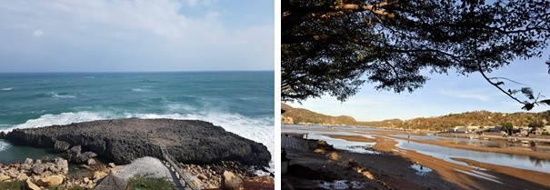
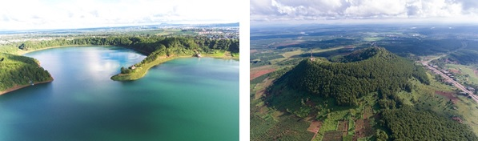

Tại kỳ họp lần thứ 33 Hội đồng Điều phối quốc tế Chương trình Con người và Sinh quyển (MAB ICC- International Coordinating Council of the Man and the Biosphere Programme) diễn ra từ ngày 13-17/9/2021 tại Abuja, Nigeria theo hình thức họp và bỏ phiếu trực tuyến, hai khu dự trữ sinh quyển (DTSQ) Núi Chúa và Cao nguyên Kon Hà Nừng của Việt Nam đã được tổ chức UNESCO công nhận là Khu DTSQ thế giới.
Trong phiên họp chiều 15/9 (theo giờ Paris, Pháp), hai hồ sơ đề cử của Việt Nam gồm Khu DTSQ Núi Chúa và Khu DTSQ Cao nguyên Kon Hà Nừng đã được Hội đồng Điều phối quốc tế Chương trình Con người và Sinh quyển xem xét công nhận là Khu DTSQ thế giới. Như vậy, trong giai đoạn 2000-2020, Việt Nam đã được công nhận tổng cộng 11 khu DTSQ thế giới, trở thành quốc gia có số lượng Khu DTSQ đứng thứ 2 trong khu vực Đông Nam Á, sau Indonesia (19 Khu DTSQ).
Khu DTSQ Núi Chúa với vùng lõi là Vườn quốc gia Núi Chúa, tổng diện tích 106.646,45ha, là mẫu chuẩn duy nhất về hệ sinh thái rừng khô hạn đặc trưng và độc đáo của Việt Nam và Đông Nam Á. Hệ sinh thái rừng ở khu vực có giá trị đặc biệt vì thuộc vùng sinh thái Trường Sơn (Greater Annamites - thuộc khu vực SA4), là một trong 200 vùng sinh thái quan trọng toàn cầu và được lựa chọn là một trong những vùng ưu tiên bảo tồn cao nhất của tất cả các kiểu sinh cảnh chính trên Trái đất. Khu DTSQ Núi chúa được đánh giá cao bởi những giá trị đa dạng sinh học độc đáo, với sự đa dạng về loài đặc hữu và các hệ sinh thái khô hạn trên cạn, hệ sinh thái biển và các hệ sinh thái nhân tạo đặc trưng của khu vực. Bên cạnh đó, với kho tàng di sản văn hóa phong phú, đặc sắc với sự góp mặt của nhiều loại hình văn hóa của nhóm các dân tộc chủ yếu gồm Raglai, Chăm, Hoa, Kinh, các di sản văn hóa vật thể nổi bật với các kiến trúc nghệ thuật, tôn giáo như đình, chùa tồn tại hàng thế kỷ, đặc biệt hệ thống các tháp Chăm gần như còn nguyên vẹn, các giá trị văn hóa phi vật thể phong phú với nhiều lễ hội lớn. Khu DTSQ là hình mẫu kết hợp bảo tồn đa dạng sinh học và các giá trị văn hóa địa phương. Về phát triển, đây là khu vực đang thực hiện chi trả dịch vụ hệ sinh thái rừng. Cùng với các hoạt động du lịch sinh thái, giao đất giao rừng và chi trả dịch vụ hệ sinh thái rừng sẽ là những hoạt động kinh tế xanh trong phát triển bền vững của đất nước.
Các cảnh quan địa chất tại Vườn Quốc gia Núi Chúa(Ninh Thuận)
Khu DTSQ Cao nguyên Kon Hà Nừng, với tổng diện tích 413.511,67ha, gồm 2 vùng lõi là Vườn Quốc gia Kon Ka Kinh và Khu Bảo tồn Thiên nhiên Kon Chư Răng, có hệ sinh thái rừng kín thường xanh mưa ẩm á nhiệt đới núi trung bình còn cơ bản giữ nguyên được hệ sinh thái đặc trưng là rừng kín nhiệt đới với cây xanh lá rộng, cây lá kim, rừng thưa xanh lá kim, thảm cây bụi, trảng cỏ; có nhiều loài quý hiếm, đặc hữu như loài Khứu Kon Ka Kinh, Chà vá chân xám là loại linh trưởng đặc hữu của Việt Nam; có tính đa dạng sinh học cao đặc trưng cho hệ sinh thái rừng, hệ thực vật rừng và hệ động vật rừng của khu vực Tây Nguyên. Khu DTSQ này cũng có vai trò quan trọng trong việc phát triển kinh tế xã hội và duy trì sự cân bằng sinh thái của khu vực Tây Nguyên và cả khu vực Trung Trung Bộ và Đông Nam Bộ. Khu DTSQ Cao nguyên Kon Hà Nừng chứa đựng kho tàng di sản văn hóa phong phú và đặc sắc với nhiều đặc trưng nổi bật về các giá trị văn hóa vật thể, phi vật thể của cộng đồng các dân tộc bản địa, đặc biệt là Văn hóa Cồng chiêng Tây Nguyên đã được UNESCO công nhận là di sản văn hóa phi vật thể của nhân loại. Sự kết hợp giữa đa dạng sinh học và các giá trị văn hóa đã hội tụ đủ các yếu tố, đáp ứng các tiêu chuẩn của UNESCO để trở thành Khu DTSQ thế giới.
Như vậy, mạng lưới các khu DTQS thế giới tại Việt Nam bao gồm 11 khu DTSQ, là các mô hình phát triển kinh tế - xã hội bền vững của địa phương, kết nối hài hòa giữa bảo tồn đa dạng sinh học với giữ gìn bản sắc văn hóa các dân tộc; giữa phát triển kinh tế với bảo vệ môi trường, sử dụng hợp lý tài nguyên, nâng cao chất lượng cuộc sống, giáo dục và nghiên cứu khoa học… Đồng thời, những khu vực được công nhận bởi UNESCO này có tiềm năng to lớn trong việc cung cấp các giải pháp giải quyết một trong những thách thức quan trọng mà thế giới đang phải đối mặt, đó là cân bằng giữa phát triển kinh tế và xã hội và giải quyết các mối đe doạ toàn cầu đang hiện hữu như nghèo đói, dịch bệnh, khai thác quá mức tài nguyên thiên nhiên, suy thoái môi trường và các tác động của biến đổi khí hậu.
Các giá trị quan tại Cao nguyên Kon Hà Nừng
Việc UNESCO công nhận thêm 02 khu DTSQ của Việt Nam thể hiện sự ghi nhận của cộng đồng quốc tế đối với những giá trị về đa dạng sinh học cũng như nỗ lực bảo tồn thiên nhiên, phát triển bền vững của Việt Nam; đồng thời góp phần quảng bá hình ảnh đất nước, con người và văn hóa của Việt Nam đối với bạn bè thế giới.
Bộ Khoa học và Công nghệ đã phối hợp chặt chẽ với Ủy ban Quốc gia UNESCO và MAB VN tiếp tục hỗ trợ cho các khu DTSQ thế giới ở Việt Nam. Đến nay, toàn bộ 09 Khu DTSQ (sắp tới sẽ thêm 02 khu DTSQ mới được công nhận) đều có nhiệm vụ KH&CN cấp quốc gia nghiên cứu về các vấn đề bảo tồn đa dạng sinh học gắn liền với các vấn đề về phát triển kinh tế xã hội như du lịch sinh thái, bảo tồn văn hóa, sinh kế bền vững cho người dân,... góp phần vào phát triển bền vững cho địa phương. Các nhà khoa học trong lĩnh vực tự nhiên đã phối hợp liên ngành với các nhà khoa học trong lĩnh vực xã hội, văn hóa, dân tộc, du lịch,... để tìm ra những mô hình phát triển bền vững.
Trong thời gian tới, Tiểu ban Khoa học Tự nhiên, Bộ Khoa học và Công nghệ sẽ hỗ trợ các Tiểu ban chuyên môn trong các hoạt động:
- Triển khai nghiên cứu tại các khu DTSQ, công viên địa chất toàn cầu (Geopark).
- Truyền thông giáo dục môi trường và quảng bá khu DTSQ và công viên địa chất.
- Với vị thế là thành viên ICC, MAB Việt Nam sẽ đẩy mạnh hơn nữa các hoạt động hợp tác quốc tế với các Ủy ban MAB của các quốc gia và hoạt động hợp tác giữa các Khu DTSQ của Việt Nam và Khu DTSQ trên thế giới trong mạng lưới MAB.
- Đẩy mạnh hợp tác công tư trong lĩnh vực bảo tồn đa dạng sinh hoạt và phát triển bền vững.
- Quảng bá những bài học thành công của các khu DTSQ Việt Nam trong quá trình thực hiện Kế hoạch hành động LIMA.
- Triển khai việc thực hiện Kế hoạch hành động LIMA tại các khu DTSQ Việt Nam trong hợp tác quốc tế.
- Xây dựng kế hoạch dài hạn về khoa học công nghệ theo chủ trương UNESCO/MAB “Science-Policy-Society”, hướng dẫn cho các khu sinh quyển thế giới đề xuất.
Bộ Khoa học và Công nghệ với vai trò là Trưởng tiểu ban Khoa học Tự nhiên sẽ tiếp tục đồng hành và hỗ trợ Chương trình Công viên Địa chất toàn cầu, Chương trình Con người và Sinh quyển cũng như các Khu DTSQ ở Việt Nam thực hiện các chiến lược và chương trình hành động của MAB, hướng tới thực hiện và đạt được các mục tiêu phát triển bền vững SDG của Liên hợp quốc.